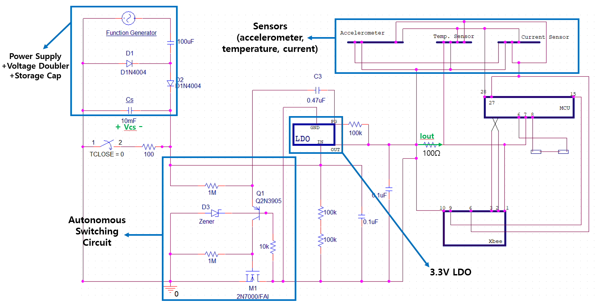
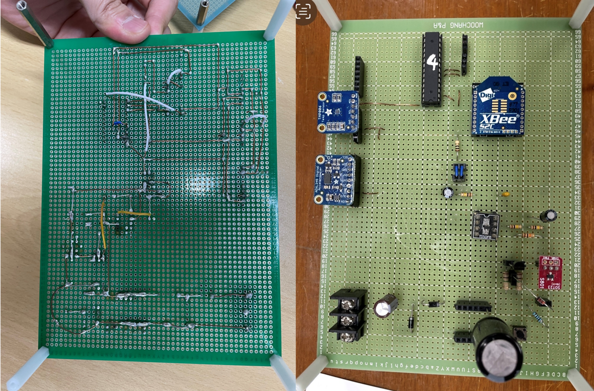
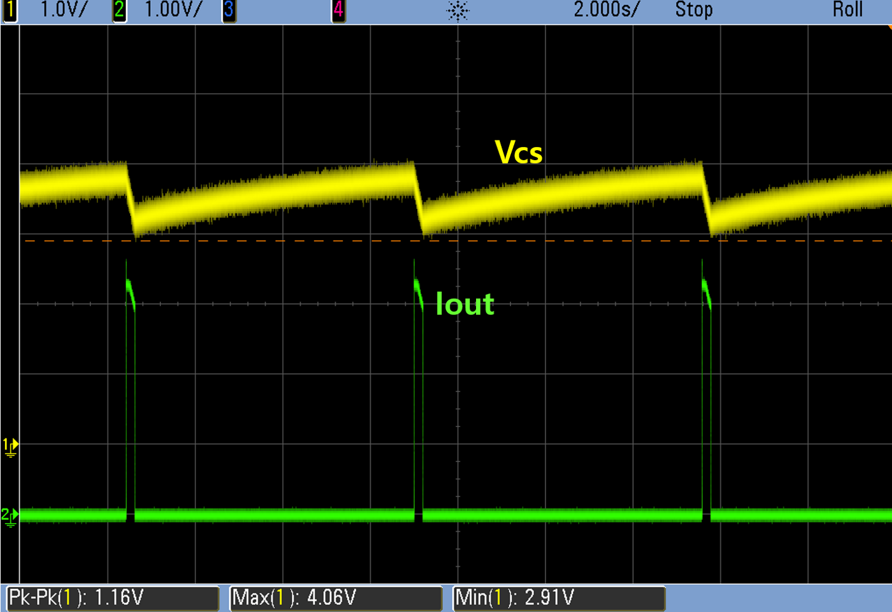
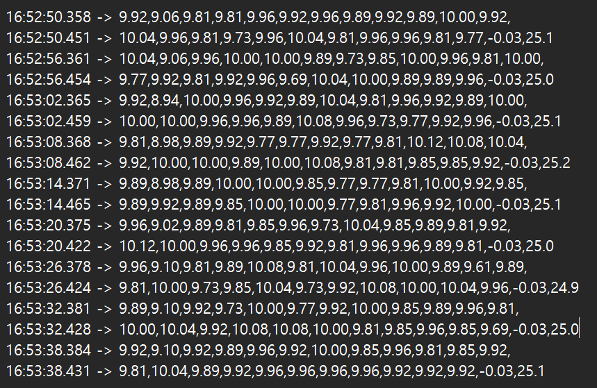

Using PSPICE, the schematic of the circuit was drawn.
The power supply goes through the voltage doubler and charges up the storage capacitor, and once it reaches a threshold
the autonomous switching circuit provides power to the rest of the circuit, and then automatically cuts off connection to start charging the storage capacitor again.

Appropriate components were used to solder the whole board together. On the left is a top and bottom view of the finished soldered board.

An oscilloscope was used to measure the storage capacitor voltage and current at the output of the LDO. With an input of AC voltage with 2.5V amplitude and 40Hz,
the storage capacitor charges for a few seconds, and periodically sends a current signal to the MCU+Xbee to collect data, and then turns off again to charge.
This circuit is designed for low power source conditions(such as near power lines).
Even with small input power, paired with a 1:20 transformer and voltage doubler, the capacitor collects charge and operates the board even from very low power sources that
are unstable.

The sensed data can be transmitted via a Xbee module using Zigbee transmission to a computer, where the data can be read.